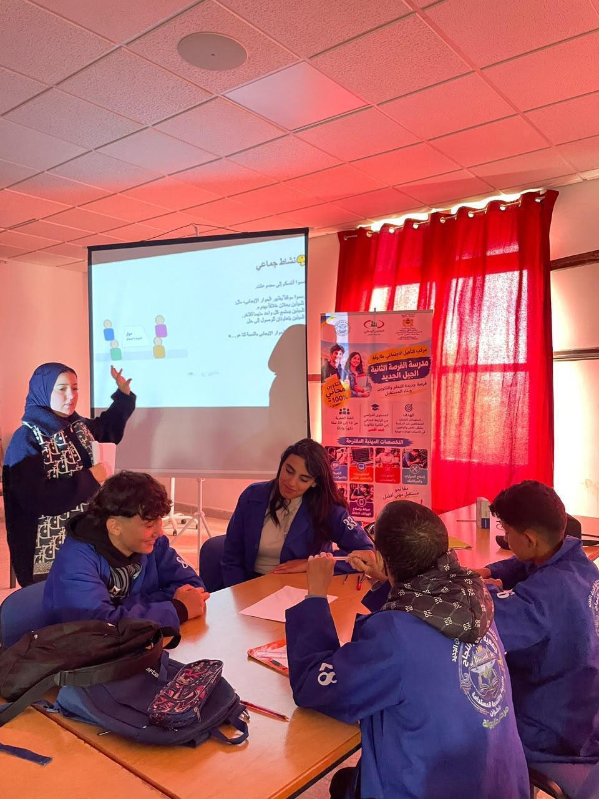
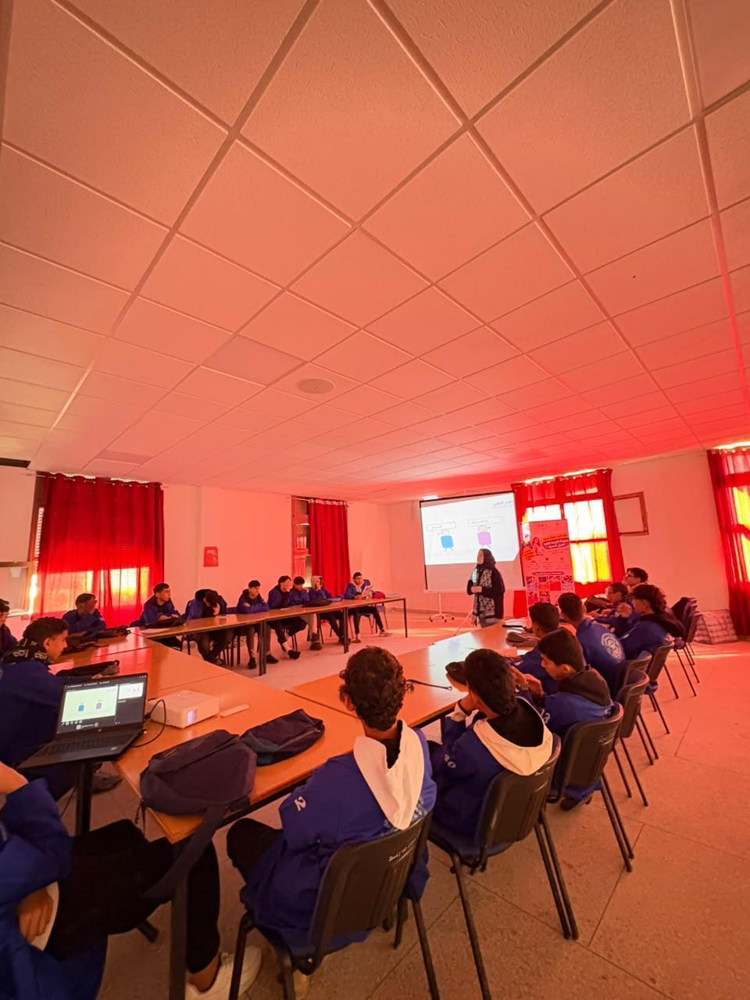
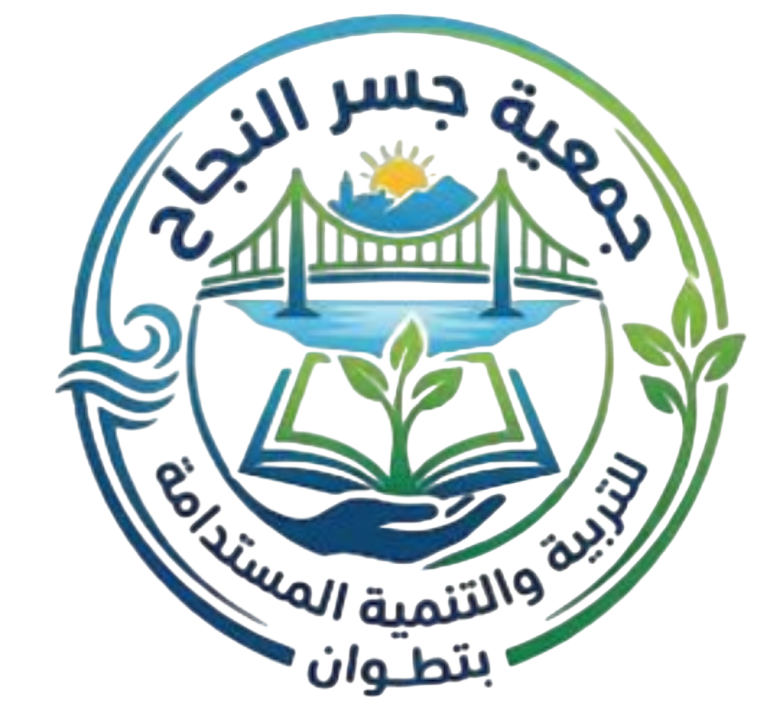
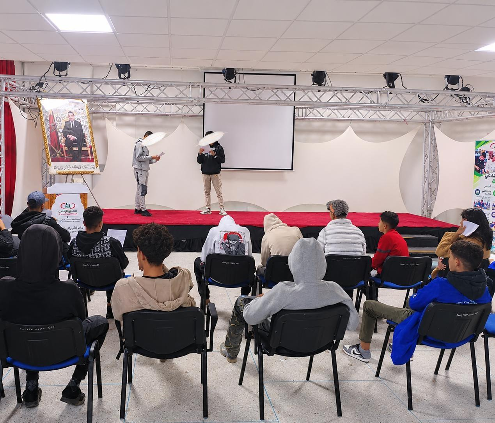
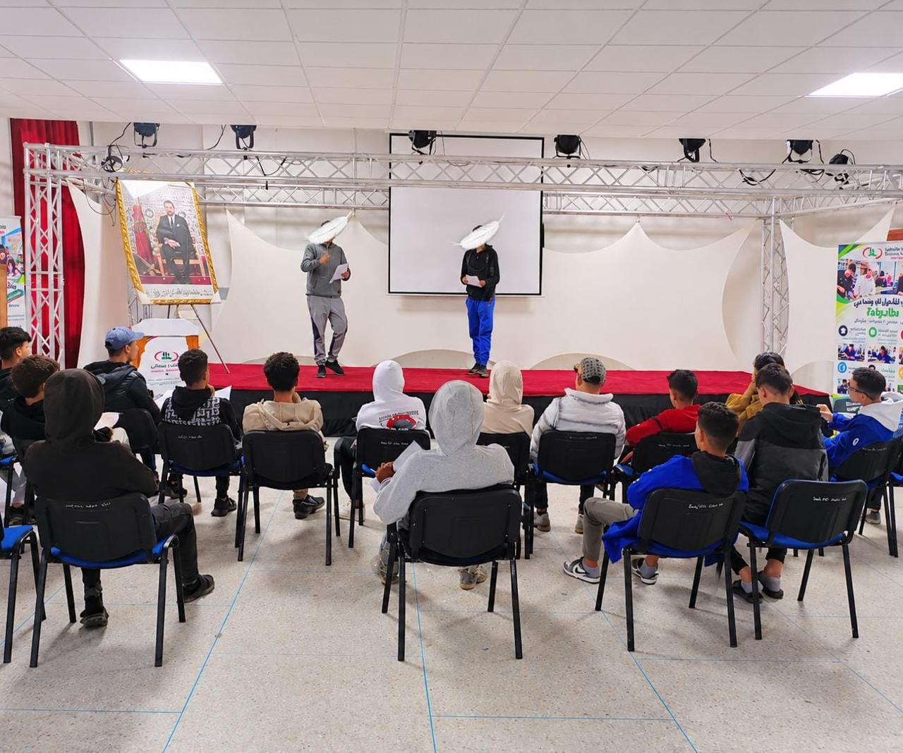

1 / 2
Dialogue positif et bonne communication
Une séance de soutien psychosocial avec les bénéficiaires du Centre Taboula de la Deuxième Chance – Nouvelle Génération.

Pour l'Éducation et le Développement Durable
Découvrez nos actions de formation, d'accompagnement psychosocial et d'insertion au profit des jeunes.


Une séance de soutien psychosocial avec les bénéficiaires du Centre Taboula de la Deuxième Chance – Nouvelle Génération.
Dans le cadre des séances de soutien psychosocial, une activité a été organisée avec les bénéficiaires du Centre Taboula de la Deuxième Chance – Nouvelle Génération autour du dialogue positif et de la bonne communication. L'objectif était de renforcer leur capacité à communiquer calmement et avec respect, à écouter leur interlocuteur et à exprimer leurs opinions.
Les échanges ont également porté sur la manière de communiquer positivement avec l'administration de l'établissement, en présentant clairement et respectueusement les problèmes ou les demandes, en écoutant l'interlocuteur et en essayant de trouver des solutions appropriées.
Ensuite, une activité collective a été organisée en groupes. Les élèves ont dessiné ou représenté des situations mettant en évidence l'importance du dialogue positif, comme résoudre les désaccords calmement, écouter les opinions des autres et coopérer pour parvenir à une solution appropriée.
Enfin, il a été souligné que le dialogue positif repose sur le respect des différences, une écoute attentive, l'expression calme de son opinion et la recherche de solutions appropriées.


Des séances de compétences de vie organisées au Centre Taboula de la Deuxième Chance – Nouvelle Génération, autour de la gestion de soi.
Des séances de compétences de vie ont été organisées au Centre Taboula de la Deuxième Chance – Nouvelle Génération, autour de la compétence de gestion de soi. Tous les apprenants ont bénéficié de cette expérience.